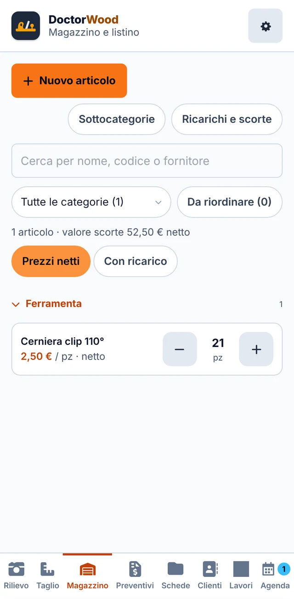
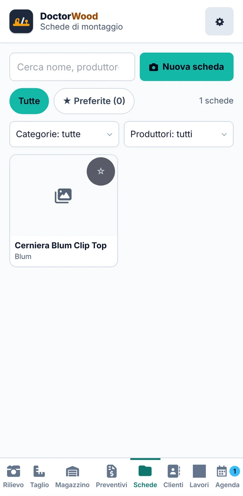
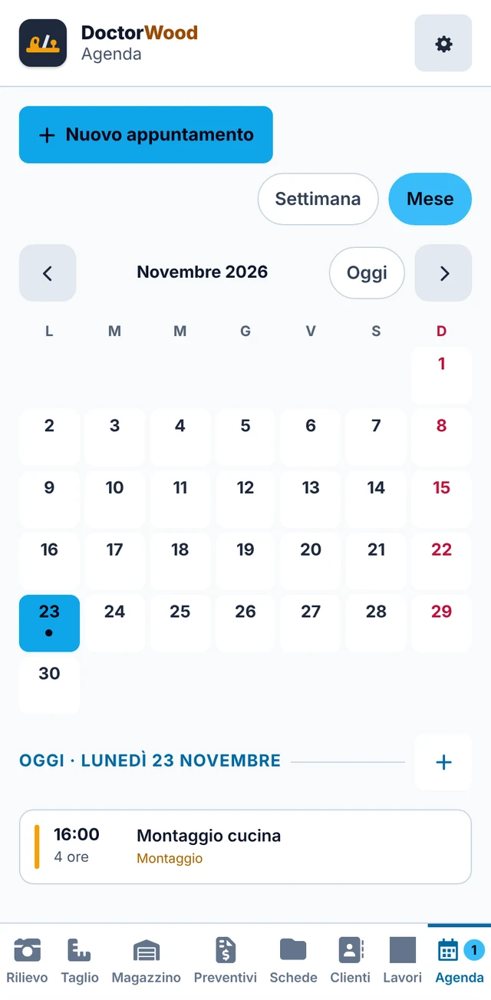
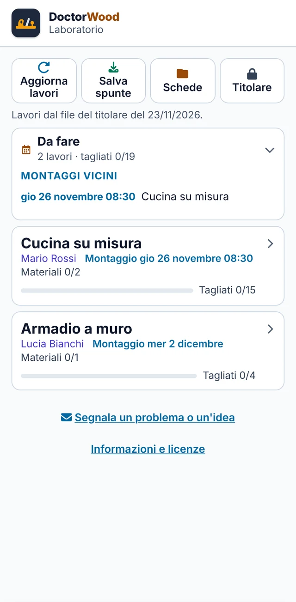
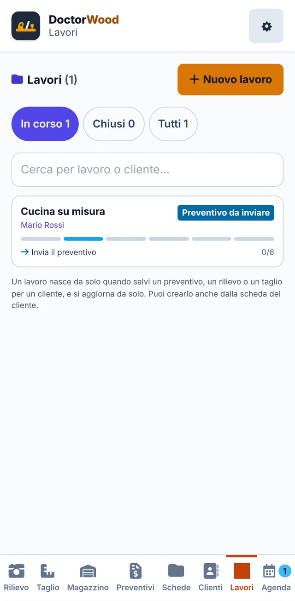

DoctorWood
Il gestionale per falegnami e arredatori, anche senza internet.
Dal rilievo in cantiere al preventivo, dal taglio dei pannelli al tablet di bottega. Tutto sul tuo telefono, senza abbonamenti e senza server.
- Gratis
- Open source
- Senza account
- Funziona offline
- Android 10+





Cosa sa fare
Dal rilievo al preventivo
Foto in cantiere con le misure disegnate sopra; preventivo in PDF con la firma del cliente fatta col dito.Foto in cantiere con le misure disegnate sopra; preventivo in PDF con la firma del cliente fatta col dito.
Taglio dei pannelli
Ottimizza i pezzi sui pannelli, riusa gli avanzi, confronta fino a 4 schemi. Etichette con QR e file DXF per la sezionatrice.Ottimizza i pezzi sui pannelli, riusa gli avanzi, confronta fino a 4 schemi.
Clienti, lavori e agenda
Anagrafica, lavori in produzione, appuntamenti, magazzino e schede di montaggio in un solo posto.Anagrafica, lavori in produzione, appuntamenti, magazzino e schede di montaggio in un solo posto.
Il tablet del laboratorio
In bottega vede solo lavori, pezzi e materiali da montare: niente prezzi, niente numeri dei clienti. Le spunte tornano al titolare.In bottega vede solo lavori, pezzi e materiali da montare: niente prezzi, niente numeri dei clienti.
Telefono e tablet sempre allineati
Sincronizzazione diretta sul Wi‑Fi, senza server. I dati restano tuoi.Sincronizzazione diretta sul Wi‑Fi, senza server.
Più dispositivi del titolare
I dispositivi del titolare si uniscono: clienti, preventivi, taglio, magazzino, foto e schede arrivano ovunque. Prima di unire viene creato un punto di ripristino e nulla si perde in silenzio.I dispositivi del titolare si uniscono: clienti, preventivi, taglio, magazzino, foto e schede arrivano ovunque.
Anche fuori dal Wi‑Fi
Con il tuo Google Drive o Dropbox i dispositivi restano allineati anche lontano dall'ufficio, con file cifrati.Con il tuo Google Drive o Dropbox i dispositivi restano allineati anche lontano dall'ufficio, con file cifrati.
Copie di sicurezza
Backup protetto da password, anche automatico una volta al giorno, e ripristino a un punto precedente.Backup protetto da password, anche automatico una volta al giorno, e ripristino a un punto precedente.
Italiano e inglese
Guida e tutorial integrati nell'app.Guida e tutorial integrati nell'app.
Guarda come funziona
Brevi filmati, senza audio.
Taglio dei pannelli
Preventivo con firma
Il tablet del laboratorio
Come si inizia
- InstallaSul telefono del titolare installa DoctorWood. Sul tablet scegli la modalità «Laboratorio».
- AbbinaDalle impostazioni mostra il codice o il QR e inseriscilo sull'altro dispositivo.
- LavoraOgnuno fa il suo: le modifiche si allineano da sole, e se serve decidi tu cosa tenere.
Domande frequenti
Posso usarlo da solo, senza altri dispositivi?
Sì. L'app è pensata per funzionare in modo indipendente: la sincronizzazione è facoltativa e, se spenta, nessun dato esce dal telefono.
Il tablet vede i prezzi?
No. In modalità Laboratorio il tablet riceve solo ciò che serve per costruire e montare.
Quanto costa?
Niente. Le app sono gratuite, senza pubblicità e senza acquisti. Se ti sono utili puoi offrire un caffè su ko-fi.com/crslabs.
Dove finiscono i miei dati?
Restano sul tuo dispositivo. CrsLabs non ha server e non raccoglie nulla. I dettagli sono nell'informativa sulla privacy.
Come si installa e come si aggiorna?
Scarica il file dalla pagina «Release» su GitHub e aprilo: Android ti chiederà di consentire l'installazione da quella fonte. Gli aggiornamenti successivi ti vengono proposti dentro l'app e si installano sopra la versione vecchia, senza perdere i dati.
Qualcosa non funziona o ho un'idea.
Scrivi a crslabs.info@gmail.com oppure usa «Segnala un problema o un'idea» dentro l'app.